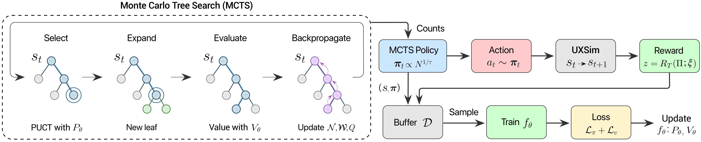
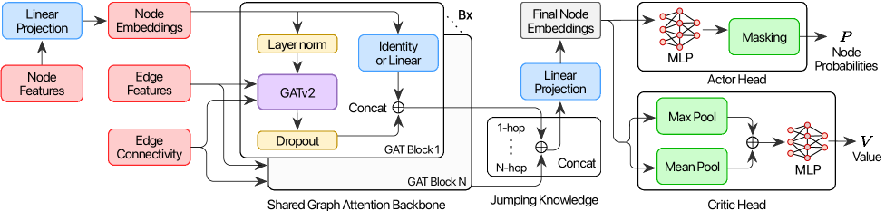
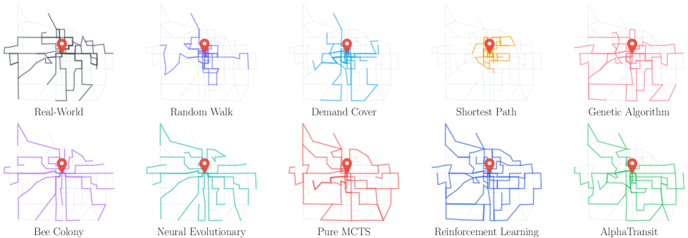

Executive Summary
당신이 매일 타는 버스 노선은 어떻게 그 길을 가는가. 1970년대부터 도시 계획가와 운영자, 민원과 예산, 그리고 누적된 데이터가 만들어낸 결과물이다. 학계는 이를 대중교통 노선망 설계 문제(TRNDP, Transit Route Network Design Problem)라고 부르며 60년 동안 풀어 왔다. NP-hard 조합 최적화에 더해, 노선 하나의 가치가 다른 노선이 모두 그려진 뒤에야 평가되는 지연된 피드백(delayed feedback) — 강화학습의 가장 어려운 케이스다. 2026년 5월 27일, Bibek Poudel·Sai Swaminathan·Weizi Li 세 사람이 AlphaTransit(arXiv:2605.28730)이라는 이름의 논문을 공개했다. MCTS와 신경망 정책가치 함수의 결합 — AlphaGo가 게임판에서 보여준 패턴이 도시 도로망 위에 도착했다.
핵심 메커니즘은 두 갈래다. 정책망(Policy)이 다음 노선 확장 후보를 제안하고, 가치망(Value)이 그 선택이 가져올 다운스트림 품질을 추정한다. 둘이 함께 MCTS(Monte Carlo Tree Search)의 의사결정 단계 탐색을 안내한다. 결과는 단호하다. 인디애나주 Bloomington의 실제 도로망과 인구조사 기반 수요 데이터에서 — 서비스율 54.6%(혼합 수요) · 82.1%(전면 대중교통 수요). RL 단독 대비 +9.9%p · +11.4%p, MCTS 단독 대비 +2.5%p · +11.2%p. 학습된 안내(learned guidance)와 탐색을 결합한 쪽이, 둘 중 하나만 쓰는 것보다 더 효과적임을 정량으로 보였다.
이 글은 두 독자를 위해 쓴다. 매일 버스를 타지만 그 노선이 어떻게 정해졌는지 궁금한 시민과, 강화학습·탐색 알고리즘의 우아함을 도시 인프라에서 다시 만나고 싶은 데이터 실무자. AlphaTransit이 푼 것과 풀지 못한 것을 정직하게 정리하고, 페블러스가 보는 Spatial AI 평가 5기준의 자리에 그것을 놓는다. AI가 도시를 디자인한다는 헤드라인을, 우리는 좀 더 작게, 더 정확하게 읽어 보려 한다.
54.6%
혼합 수요 서비스율
Bloomington mixed demand
82.1%
전면 대중교통 서비스율
full transit demand
+11.4%p
RL 단독 대비 개선
full transit 시나리오
+11.2%p
MCTS 단독 대비 개선
학습된 안내(learned guidance) 효과
3
저자 수
Poudel·Swaminathan·Li
TRNDP — 왜 풀기 어려운가
버스 정류장에 서 있을 때, "왜 이 노선이 여기를 지나가는가"를 묻는 시민은 드물다. 하지만 한 번 이 질문을 시작하면, 답은 얕지 않다. 노선 한 가닥은 도시 계획가의 통근 데이터 분석, 주민의 청원, 운영자의 예산 협상, 그리고 수십 년 누적된 운행 패턴이 겹쳐 만든 산물이다. 도시 위에 K개의 노선을 어떻게 배치할 것인가 — 학계는 이를 대중교통 노선망 설계 문제(TRNDP, Transit Route Network Design Problem)라고 부른다.
TRNDP는 1970년대부터 운영 연구(Operations Research, OR)의 고전 문제다. 정수 계획법(MILP, Mixed-Integer Linear Programming), 유전 알고리즘, 시뮬레이티드 어닐링이 차례로 시도되었지만, 도시 규모로 가면 모두 폭발한다. 이유는 단순하다. 도로망 노드가 100개만 되어도 가능한 노선 조합은 천문학적으로 늘어나고, 그중 한 노선의 가치는 다른 노선들과의 상호작용에 따라 달라진다. 전형적인 NP-hard.
그러나 TRNDP의 진짜 어려움은 NP-hard보다 한 층 더 깊은 곳에 있다. "이 노선이 좋은가"는 모든 노선이 그려진 뒤 시뮬레이션을 돌려 봐야 알 수 있다. 한 가닥을 잘못 그려도 전체가 완성될 때까지 모른다. 강화학습 용어로는 긴 호흡 신용 할당(long-horizon credit assignment) — 60~100단계의 결정 중 어느 한 수가 최종 점수에 얼마나 기여했는지 역추적해야 하는 문제다. 이 한 줄이 TRNDP를 알고리즘으로 푸는 모든 시도의 발목을 잡았다.
바둑·체스가 같은 어려움을 안고 있었다. 한 수의 가치는 게임이 끝날 때까지 알 수 없다. AlphaGo가 그것을 어떻게 풀었는지 우리는 안다 — 탐색(MCTS)과 학습(신경망 정책가치 함수)을 함께 쓰는 것. AlphaTransit이 도시 도로망 위에서 시도한 것은 정확히 같은 패턴이다.
AlphaTransit의 작동 — MCTS + 정책가치망
AlphaTransit이 하는 일을 한 문장으로 줄이면 이렇다. 도로망 그래프 위에서, 한 엣지씩 노선을 늘려 나가며 K개의 노선을 완성한다. 매 단계마다 어떤 엣지로 갈지 결정해야 하고, 그 결정의 누적이 최종 노선 네트워크가 된다. 게임으로 비유하면 — 한 수씩 두며 K번의 노선 결정을 완성하는 보드 게임에 가깝다.

2.1정책망과 가치망
에이전트의 두뇌는 두 개의 신경망이다. 정책망(Policy Network)은 현재 상태(이미 그려진 노선 + 도로망 + 수요)에서 "다음에 어느 엣지로 노선을 확장해야 하는가"의 확률 분포를 출력한다. 가치망(Value Network)은 같은 상태에서 "이 상태로부터 최종 성능이 얼마나 될 것 같은가"를 추정한다. 두 망은 같은 도로망·OD 수요·기존 노선 구조를 입력으로 받지만, 출력하는 답이 다르다 — 한쪽은 다음 한 수, 한쪽은 미래의 점수.

2.2MCTS — 의사결정 시점의 lookahead
정책망과 가치망이 "직관"을 제공한다면, MCTS(Monte Carlo Tree Search)는 그 직관을 "심사숙고"로 끌어올린다. 매 결정 시점마다 정책망의 추천을 따라 트리를 펼치고, 가치망으로 잎 노드의 미래 가치를 평가한다. 가능성이 보이는 가지는 더 깊이 탐색하고, 가망 없는 가지는 빨리 가지치기한다. 충분히 시뮬레이션을 돌린 뒤 가장 신뢰할 만한 행동을 선택한다.
이것이 AlphaGo·AlphaZero·MuZero에서 검증된 "학습된 안내(learned guidance) + 탐색(search)"의 우아한 패턴이다. 학습만으로는 긴 호흡(long-horizon)에서 흔들리고, 탐색만으로는 거대한 행동 공간 앞에서 무력해진다. 둘이 손을 잡으면 — 한쪽이 길을 비춰주고 다른 한쪽이 그 길의 끝을 미리 본다.
AlphaTransit의 진짜 기여는 두 가지의 시너지를 정량으로 보인 것이다. 논문이 명시하는 핵심 명제: "coupling learned guidance with MCTS is more effective than using either approach alone for transit network design." RL 단독(가치망 없는 정책 학습)도 가능하고, MCTS 단독(학습 없는 순수 탐색)도 가능하지만 — 도시 노선 설계라는 긴 호흡(long-horizon) 문제에서는 둘을 결합해야 진가가 나온다. 다음 섹션의 수치가 이를 보여준다.
2.3지연된 피드백(delayed feedback)을 어떻게 푸는가
노선의 가치가 마지막에야 드러난다는 §1의 어려움 — AlphaTransit은 이걸 두 갈래로 푼다. 첫째, 가치망이 중간 상태의 미래 가치를 추정한다. 학습이 진행될수록 가치망은 "이 정도 노선 구조로는 결국 서비스율 X%에 도달하더라"는 패턴을 익힌다. 둘째, MCTS의 lookahead가 가치망의 추정에 의존하지 않고 직접 trajectory를 펼쳐 본다. 두 신호가 합쳐지면, 60단계 뒤의 결과를 30단계 시점에서도 어느 정도 가늠할 수 있게 된다.
Bloomington 벤치마크 — 54.6% / 82.1%
TRNDP 연구의 오랜 약점은 벤치마크의 빈약함이었다. Mumford 60·100·150, Mandl 15 같은 합성 도시가 학술 표준이었다 — 깔끔하지만 가짜 도시다. AlphaTransit은 다른 길을 택했다. 인디애나주 Bloomington의 실제 도로 토폴로지와 인구조사(census) 기반 통근 수요 위에서 실험을 돌렸다. 16개 실존 노선이 운영 중인 도시 — Bloomington Transit이 실제로 서비스하는 그 도시 위에서.
3.1두 시나리오, 네 비교
실험은 두 수요 시나리오로 진행된다. 혼합 수요(mixed demand)는 차량과 대중교통이 공존하는 현실적 가정 — 일부 시민은 어차피 차로 이동한다. 전면 대중교통 수요(full transit demand)는 모든 통근이 대중교통으로 흡수되는 극한 가정 — 도시가 자동차에서 모드 전환할 때의 모습이다. 두 시나리오에서 AlphaTransit, RL 단독, MCTS 단독, 그리고 비교 휴리스틱들의 서비스율을 측정한다.
| 방법 | 혼합 수요 | 전면 대중교통 | 핵심 메시지 |
|---|---|---|---|
| AlphaTransit (MCTS + 정책가치망) | 54.6% | 82.1% | 학습 + 탐색의 시너지 |
| RL 단독 (학습만, 탐색 없음) | 44.7% | 70.7% | 긴 호흡(long-horizon)에서 흔들림 |
| MCTS 단독 (탐색만, 학습 안내 없음) | 52.1% | 70.9% | 광활한 행동 공간에서 비효율 |
| 실제 운영망 (Bloomington Transit) | 기준선 | 기준선 | 인간 도시계획가의 누적 결과 |
※ AlphaTransit 대비 RL/MCTS 단독의 격차: 혼합 수요에서 +9.9%p·+2.5%p, 전면 대중교통에서 +11.4%p·+11.2%p. (출처: arXiv:2605.28730)
표가 말해 주는 것은 두 가지다. 첫째, 학습된 안내와 탐색은 서로의 약점을 보완한다. RL 단독은 긴 호흡(long-horizon)에서 가치 추정이 흐릿해지고, MCTS 단독은 정책 안내 없이 너무 많은 가지를 살펴봐야 한다. 둘째, 혼합 수요와 전면 대중교통에서 시너지의 크기가 다르다. 전면 대중교통 시나리오에서 AlphaTransit이 RL/MCTS 단독을 11%p씩 압도한다는 사실은, 도시가 대중교통 중심으로 모드 전환할 때 AI 설계의 가치가 비약적으로 커진다는 신호로 읽힌다.

기억할 한 줄: "AlphaTransit이 본 진실은 결합의 진실이다." 학습 하나로도, 탐색 하나로도 충분하지 않다. 도시 인프라처럼 긴 호흡(long-horizon)에 보상이 희소한(sparse) 문제에서는 — 두 가지가 손을 잡을 때 비로소 의미 있는 차이가 생긴다. AlphaGo가 게임판에서 보여줬던 진실을, AlphaTransit이 도로망에서 다시 보여주었다.
AlphaGo가 도시에 도착하다
"AlphaTransit"이라는 이름은 우연이 아니다. AlphaGo → AlphaZero → MuZero → AlphaFold로 이어진 DeepMind 계열의 패러다임 — 학습된 정책가치 함수 + 탐색의 결합 — 이 도시 인프라 설계에 도착한 것을 이름이 말해 준다. AlphaGo가 2016년 이세돌을 이긴 그 알고리즘의 본질은 "한 수씩 두면서 최종 결과를 보상으로 받는 순차 결정 문제"였다. 노선 설계는 정확히 같은 구조다 — 한 엣지씩 그리면서 마지막에 서비스율로 보상을 받는다.

4.1계보를 따라가 보면
DeepMind 계보의 시간순 정리. AlphaGo(2016) — 지도학습 + 자기대국 RL + MCTS의 결합으로 인간 챔피언을 이겼다. AlphaZero(2017) — 지도학습 없이 self-play만으로 같은 일을 했고, 바둑·체스·쇼기로 일반화됐다. MuZero(2019) — 환경 모델까지 학습해서 규칙을 모르는 게임도 풀었다. AlphaFold(2020) — 같은 패러다임의 변형이 단백질 접힘 문제를 풀었다. AlphaTransit(2026) — 도시 도로망 위에서 대중교통 노선을 설계한다. 진화의 방향은 점점 더 "규칙이 덜 명확하고 보상이 sparse한 실세계 문제"로 향한다.
4.2도시 교통 RL의 흐름 속에서
도시 교통에 RL을 적용한 시도는 AlphaTransit이 처음은 아니다. 신호등 제어는 2018년 이후 multi-agent RL의 표준 응용 분야가 됐다(SUMO·MATSim 기반 수많은 연구). 차량 라우팅(vehicle routing)은 AlphaRouter 등 MCTS+RL 조합이 시도되었다. 노선 휴리스틱 학습은 Lemoy 등(2024)이 GNN으로 evolutionary algorithm의 휴리스틱을 학습하는 하이브리드를 보였다.
AlphaTransit의 새로움은 "노선 자체를 처음부터 그린다"에 있다. 휴리스틱을 돕는 것이 아니라, 휴리스틱을 대체한다. 합성 벤치마크가 아닌 실제 도시에서. 그리고 AlphaGo 계보의 우아한 패턴을 도시 인프라 설계에 그대로 가져왔다.
학술적 함의는 한 줄이다. 게임·바이오에서 검증된 "학습된 안내 + 탐색" 패러다임이, 도시 인프라라는 사회 시스템으로 확장되고 있다. 다음 차례는 무엇일까. 학군 배치? 응급실 입지? 우편 분류망? 폐기물 수거 노선? 각각 같은 구조의 문제이고, 같은 패러다임이 닿을 수 있다.
서울이라면 어떨까
Bloomington은 작다. 인구 약 8만, 16개 노선. 그 위에서 작동한 알고리즘이 서울에서도 작동할까. 이 질문을 정직하게 답하려면, 먼저 두 도시의 거리감을 봐야 한다.

| 항목 | Bloomington, IN | 서울특별시 |
|---|---|---|
| 인구 | 약 8만 | 약 940만 (120배) |
| 버스 노선 수 | 16개 | 350+ 개 (20배 이상) |
| 정류장 수 | 수백 개 | 8,200+ 개 |
| 다중 모드 | 버스만 | 버스 + 지하철 12개 노선 + 광역철도 |
5.12004년 서울 버스 개편이라는 선례
서울은 이미 도시 단위 버스망 재설계를 경험했다. 2004년 7월 1일, 1년 반의 준비 끝에 서울시는 버스 시스템 전체를 한꺼번에 바꿨다. 간선·지선·광역·순환의 4분류 체계, 환승 할인 통합, 중앙버스전용차로, 그리고 도시 단위로 다시 그린 노선망. 1년 후 일일 승객 +14%, 만족도 14.2%에서 36.9%로 상승했다. 인간 도시계획가들이 도시 단위 노선 개편이 실제로 가능하고, 효과가 있음을 증명한 역사적 사례다.
AlphaTransit이 서울에 적용된다면 마주칠 변수들은 단순하지 않다. 규모 — Bloomington 노드 수의 수십 배. 강화학습의 sample efficiency가 견딜 것인가. 다중 모드 — 지하철 12개 노선과의 환승 최적화는 본 논문의 범위 밖이다. 정치적 변수 — 노선 폐지는 종사자 일자리, 노선 인근 상권에 직결된다. 알고리즘이 다루지 않는다. 형평성 — 서비스율 최대화는 인구 밀집 지역에 노선을 몰아 넣을 수 있다. 변두리 노약자는 어디로 가나.
그러나 부분 적용은 이미 가능한 것처럼 보인다. 마을버스 같은 feeder 라인 재설계, 신도시 초기 노선 설계(이미 그려진 노선이 없으므로 정치적 비용이 낮다), 폐지 후보 노선의 영향 시뮬레이션. AlphaTransit은 "AI가 서울 버스를 다시 그린다"의 데모가 아니다. 인간 도시계획가의 의사결정을 보조하는 시뮬레이터의 첫 진지한 모델이다. 그 거리감을 정직하게 인정할 때 응용이 시작된다.
UrbanGPT와 만나는 자리 — 페블러스 관점
페블러스가 본 도시 설계 AI의 풍경은 두 갈래로 갈라진다. 한쪽은 텍스트로 도시를 그리는 흐름 — Studio Tim Fu의 UrbanGPT 2.0이 대표한다. "공원이 있고 학교 옆에 카페가 있는 거리"라는 한 줄을 3D 도시 레이아웃으로 바꾼다. 다른 한쪽은 강화학습으로 흐름을 그리는 길 — 오늘의 AlphaTransit이다. "이 도시의 OD 수요가 이렇다"라는 데이터를 노선 네트워크로 바꾼다. 둘은 같은 큰 흐름의 다른 단면이다 — AI가 도시의 형태와 흐름을 생성한다.
6.1Spatial AI 5기준으로 AlphaTransit을 읽으면
페블러스가 제안한 Spatial AI 평가 5기준의 관점에서 AlphaTransit을 짚으면, 강점과 빈자리가 또렷이 보인다.
| 평가 기준 | AlphaTransit 평가 | 근거 |
|---|---|---|
| Geo 정합성 | ✓ 강함 | 실제 도로망과 census 좌표 사용 |
| Scale 일관성 | ✓ 강함 | 실제 Bloomington 인프라 1:1 |
| 시나리오 다양성 | △ 부분적 | 혼합·전면 대중교통 2개. 출퇴근·심야·이벤트 미반영 |
| Sim-to-Real Gap | △ 부분적 | 실제 운영망과 정량 비교. 그러나 시뮬레이션 한계 인정 필요 |
| 인간 협업 / 위험 추적 | ✗ 부재 | 형평성·접근성 패널티 없음. 시민 피드백 루프 없음 |
5기준 중 두 개에서 강하고, 두 개에서 부분적이며, 한 개에서 부재하다. AlphaTransit은 데이터 정합성·스케일 일관성에서는 모범적이다. 합성 도시가 아닌 실제 Bloomington 위에서 작동했다는 것이 그 자체로 가치다. 그러나 시민이 알고리즘에 어떻게 참여하는가, 형평성을 어떻게 보장하는가는 본 논문 범위 밖이다. 도시 설계 AI는 알고리즘 문제가 아니라 데이터 + 알고리즘 + 사회 시스템의 합산 문제임을 다시 한번 보여 준다.
6.2페블러스가 그 자리에 있는 이유
페블러스는 학습 데이터의 품질이라는 자리를 노린다. AlphaTransit이 학습하는 OD 수요·도로망·census 데이터의 정합성이 보장될 때, 알고리즘의 출력도 신뢰할 수 있다. 학습 데이터가 편향되면 노선도 편향된다 — 변두리 인구가 OD에 덜 잡혀 있으면, 알고리즘은 그곳에 노선을 덜 그린다. 데이터 품질이 도시의 형평성을 결정한다. 페블러스의 DataGreenhouse와 DataClinic은 그 지점에서 도시 설계 AI에 닿는다.
UrbanGPT가 도시의 형태(form)를 생성한다면, AlphaTransit은 도시의 흐름(flow)을 설계한다. 형태와 흐름은 떼어놓을 수 없다 — 공원이 어디에 있는지가 버스 노선을 결정하고, 버스가 어디로 가는지가 카페의 위치를 결정한다. 페블러스는 두 흐름이 만나는 자리에서, 데이터가 양쪽 모두를 받쳐 줄 수 있도록 돕는 역할을 본다.
도시 설계 AI의 다음 한 걸음
AlphaTransit이 푼 것을 한 문장으로 정리하면 — TRNDP를 실제 도시 데이터 위에서 MCTS와 정책가치망의 결합으로 풀 수 있음을 정량으로 보였다. AlphaGo 계보의 우아한 패턴이 도시 인프라 설계라는 사회 시스템에 닿은 사건이다.
남은 일은 정직하게 길다. 메가시티 스케일링 — 서울·도쿄·NYC로 갈 때 sample efficiency와 탐색 비용이 폭발하지 않을 것인가. 다중 모드 통합 — 버스만이 아니라 지하철·자전거 공유·자율주행 셔틀까지 함께. 동적 수요 — 출퇴근·심야·축제·재난의 모든 시간대. 형평성·접근성 — 변두리 노약자가 보상 함수에 들어오게. 시민 피드백 — 알고리즘의 출력이 토론·청문·재학습으로 이어지게.
그러나 첫발이 가벼운 것은 아니다. AlphaTransit이 보여 준 것은 "알고리즘이 도시를 더 잘 설계할 수 있을 가능성"이 아니라 "학습된 안내와 탐색의 결합이 도시 노선 설계에서 의미 있는 수치 차이를 만든다"이다. 그 사이의 거리는 크다 — 그러나 알고리즘이 도시에서 무엇을 할 수 있는지에 대한 우리의 지도는, 어제보다 한 칸 더 명확해졌다.
마지막 질문 하나. 도시는 알고리즘이 설계하는가, 시민이 설계하는가, 둘이 함께 설계하는가? AlphaTransit은 그 대화의 시작이지, 답이 아니다. 페블러스는 그 대화가 데이터의 품질로부터 출발한다고 본다 — 알고리즘은 자기가 본 데이터만큼만 도시를 본다.
당신이 매일 타는 버스 노선이 어떻게 그 길을 가게 되었는지, 이제는 조금 다르게 보일 것이다. 그것은 단순히 누군가의 결정이 아니라, 데이터·알고리즘·정치·역사가 누적된 산물이다. 그리고 그 위에 — 학습과 탐색을 함께 쓰는 작은 에이전트가 막 도착했다.
페블러스 데이터 커뮤니케이션팀
2026년 5월 28일
참고문헌
본 글이 인용한 1차 출처와 주요 2차 자료를 정리한다.
학술 1차 출처
- Poudel, B., Swaminathan, S., & Li, W. (2026). "AlphaTransit: Learning to Design City-scale Transit Routes." arXiv:2605.28730. 링크
- AlphaTransit 코드 저장소 (저자 GitHub). github.com/poudel-bibek/AlphaTransit
- Silver, D., et al. (2017). "Mastering the Game of Go without Human Knowledge" (AlphaZero). Nature, 550. 링크
- Lemoy, R., et al. (2024/2025). "Learning Heuristics for Transit Network Design and Improvement with Deep Reinforcement Learning." arXiv:2404.05894 / Transportmetrica B 13(1). 링크
서울 버스 개편 사례
- Seoul Solution / Seoul Metropolitan Government. "Reforming Public Transportation in Seoul." 링크
- UN-Habitat (2013). "Bus Reform in Seoul, Republic of Korea." Case Study Report. 링크
- Streetsblog USA (2018). "What American Cities Can Learn From Seoul's 2004 Bus Redesign." 링크